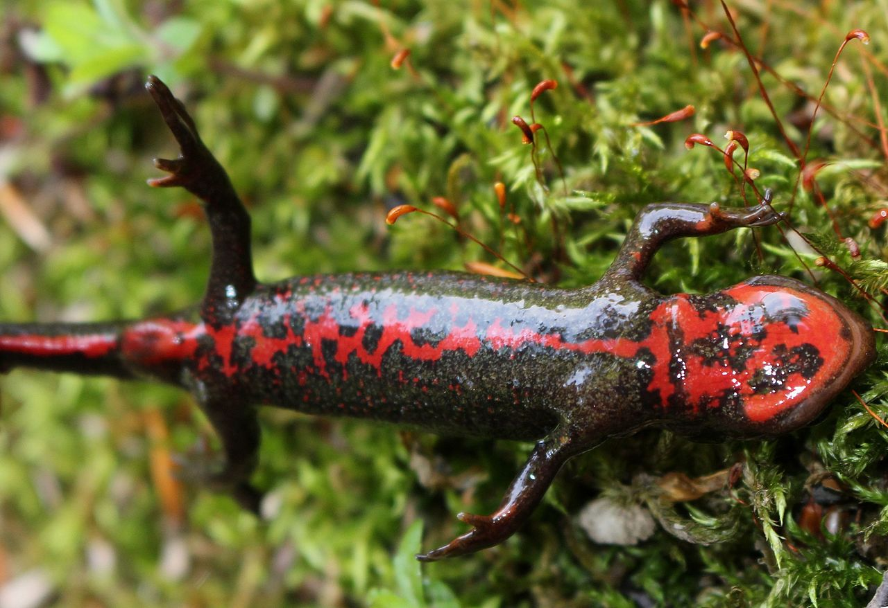
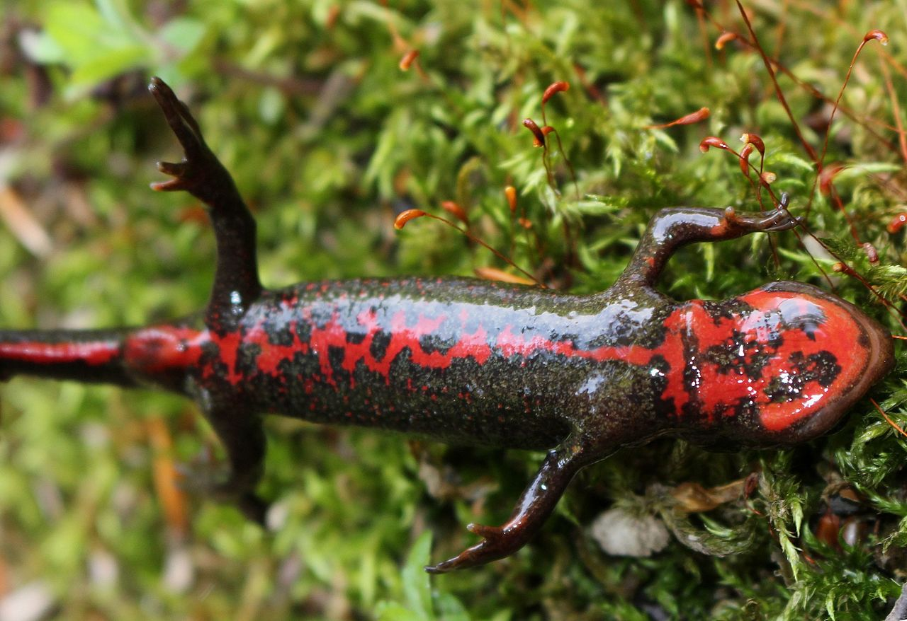

Los reptiles son animales vertebrados de sangre fría, provistos de escamas o de caparazón, y figuran entre los más antiguos del planeta. Su origen se remonta a la era Mesozoica o de los dinosaurios, en el periodo carbonífero, aunque provienen de otros vertebrados más antiguos como los tetrápodos, que están emparentados con los anfibios. La mayor parte de los reptiles prefieren hábitats cálidos, aunque se han adaptado a la vida terrestre y acuática, e incluso subterránea. Los reptiles se clasifican en: Lagartos (saurios), Serpientes (ofidios), Cocodrilos(aligatores), Rinocéfalos(tuátara) y Tortugas (quelonios)
Los mamíferos son un grupo de animales que engloba seres muy diversos: desde la enorme ballena azul al murciélago. Aún así, todos ellos comparten una característica común: tienen unas glándulas mamarias productoras de leche mediante las que alimentan a las crías. Todos son vivíparos a excepción del orden de los monotremas en el que se incluyen animales tan excepcionales como el ornitorrinco y los equidnas. Y todos descienden de un antepasado común que probablemente se remonta a finales del Triásico, hace más de 200 millones de años. Algunos de ellos se encuentran en peligro de extinción, pero lo cierto es que habitan en la gran mayoría de ecosistemas del planeta (excepto algunas tierras heladas de la Antártida) gracias a la capacidad de adaptación que han demostrado a lo largo de toda su historia evolutiva. Se han descrito casi 5.500 especies diferentes, suelen tener grandes capacidades de aprendizaje debido a que su volumen encefálico es mayor que el de otras especies y puede tener dietas muy variadas, algo que también ha contribuido a una mejor adaptación al medio.
 


Su nombre proviene del griego y significa "ambos medios", pues su vida transcurre entre el medio acuático y el terrestre. Se tratan los ancestros de los anfibios del primer grupo de vertebrados que colonizó el continente y se adaptó a una vida semiterrestre. Se encuentran prácticamente en todas las regiones del mundo excepto en aquellas donde las condiciones climáticas son más duras como el Ártico, la Antártida y los desiertos más extremos. Los anfibios se caracterizan a diferencia del resto de vertebrados de pasar por diversos cambios y estadios morfológicos a lo largo de sus ciclos de vida. Transformaciones que de producirse de forma brusca reciben el nombre de metamorfosis.